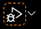
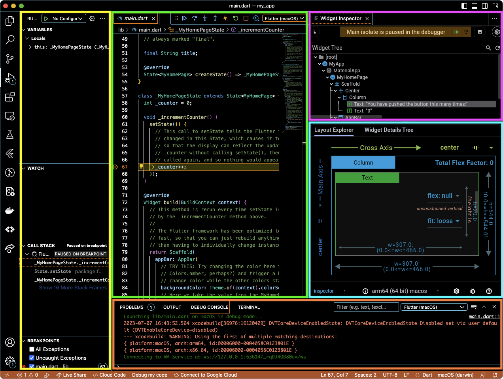

Use a native language debugger
If you write Flutter apps only with Dart code, you can debug your code using your IDE’s debugger. The Flutter team recommends VS Code.
If you write a platform-specific plugin or use platform-specific libraries, you can debug that portion of your code with a native debugger.
- To debug iOS or macOS code written in Swift or Objective-C, you can use Xcode.
- To debug Android code written in Java or Kotlin, you can use Android Studio.
- To debug Windows code written in C++, you can use Visual Studio.
This guide shows you how you can connect two debuggers to your Dart app, one for Dart, and one for the native code.
Debug Dart code
This guide describes how to use VS Code to debug your Flutter app. You can also use your preferred IDE with the Flutter and Dart plugins installed and configured.
Debug Dart code using VS Code
The following procedure explains how to use the Dart debugger with the default sample Flutter app. The featured components in VS Code work and appear when debugging your own Flutter project as well.
-
Create a basic Flutter app.
$ flutter create my_appCreating project my_app... Resolving dependencies in my_app... Got dependencies in my_app. Wrote 129 files. All done! You can find general documentation for Flutter at: https://docs.flutter.dev/ Detailed API documentation is available at: https://api.flutter.dev/ If you prefer video documentation, consider: https://www.youtube.com/c/flutterdev In order to run your application, type: $ cd my_app $ flutter run Your application code is in my_app/lib/main.dart.$ cd my_app -
Open the
lib\main.dartfile in the Flutter app using VS Code. -
Click the bug icon (). This opens the following panes in VS Code:
- Debug
- Debug Console
- Widget Inspector
The first time you run the debugger takes the longest.
-
Test the debugger.
a. In
main.dart, click on this line:_counter++;b. Press Shift + F9. This adds a breakpoint where the
_countervariable increments.c. In the app, click the + button to increment the counter. The app pauses.
d. At this point, VS Code displays:
- In the Editor Groups:
- The highlighted breakpoint in
main.dart - The widget hierarchy for the Flutter app in the Widget Tree of the Widget Inspector
- The highlighted breakpoint in
- In the side bar:
- The state of the app in the Call Stack section
- The value of the
thislocal variable in the Variables section
- In the panel:
- The log of the Flutter app in the Debug console
- In the Editor Groups:
VS Code Flutter debugger
The Flutter plugin for VS Code adds a number of components to the VS Code user interface.
Changes to VS Code interface
When launched, the Flutter debugger adds debugging tools to the VS Code interface.
The following screenshot and table explain the purpose of each tool.

| Highlight Color in Screenshot | Bar, Panel, or Tab | Contents |
|---|---|---|
| Yellow | Variables | List of current values of variables in the Flutter app |
| Watch | List of items you chose to track in the Flutter app | |
| Call Stack | Stack of active subroutines in the Flutter app | |
| Breakpoints | List of exceptions and set breakpoints that you set | |
| Green | <Flutter files> |
Files that you are editing |
| Pink | Widget Inspector | Hierarchy of widgets in the running Flutter app |
| Blue | Layout Explorer | Visual of how Flutter placed the widget you selected in the Widget Inspector |
| Widget Details Tree | List of properties of the widget selected in the Widget Inspector | |
| Orange | Problems | List of issues the Dart analyzer found in the current Dart file |
| Output | Response that the Flutter app returns when building an app | |
| Debug Console | Logs or error messages that the Flutter app generates while debugging | |
| Terminal | System shell prompt contained in VS Code |
To change where the panel (in orange) appears in VS Code, go to View > Appearance > Panel Position.
VS Code Flutter debugging toolbar
The toolbar allows you to debug using any debugger. You can step in, out, and over Dart statements, hot reload, or resume the app.
| Icon | Action | Default Keyboard Shortcut |
|---|---|---|
| Start or Resume | F5 | |
| Pause | F6 | |
| Step Over | F10 | |
| Step Into | F11 | |
| Step Out | Shift + F11 | |
| Hot Reload | Ctrl + F5 | |
| Hot Restart | Shift + Special + F5 | |
| Stop | Shift + F5 | |
| Open Widget Inspector |
Update test Flutter app
For the remainder of this guide, you need to update the test Flutter app. This update adds native code to debug.
-
Open the
lib/main.dartfile using your preferred IDE. -
Replace the contents of
main.dartwith the following code.Expand to see Flutter code for this example
lib/main.dart// Copyright 2023 The Flutter Authors. All rights reserved. // Use of this source code is governed by a BSD-style license that can be // found in the LICENSE file. import 'package:flutter/material.dart'; import 'package:url_launcher/url_launcher.dart'; void main() { runApp(const MyApp()); } class MyApp extends StatelessWidget { const MyApp({super.key}); @override Widget build(BuildContext context) { return MaterialApp( title: 'URL Launcher', theme: ThemeData( colorSchemeSeed: Colors.purple, brightness: Brightness.light, ), home: const MyHomePage(title: 'URL Launcher'), ); } } class MyHomePage extends StatefulWidget { const MyHomePage({super.key, required this.title}); final String title; @override State<MyHomePage> createState() => _MyHomePageState(); } class _MyHomePageState extends State<MyHomePage> { Future<void>? _launched; Future<void> _launchInBrowser(Uri url) async { if (!await launchUrl( url, mode: LaunchMode.externalApplication, )) { throw Exception('Could not launch $url'); } } Future<void> _launchInWebView(Uri url) async { if (!await launchUrl( url, mode: LaunchMode.inAppWebView, )) { throw Exception('Could not launch $url'); } } Widget _launchStatus(BuildContext context, AsyncSnapshot<void> snapshot) { if (snapshot.hasError) { return Text('Error: ${snapshot.error}'); } else { return const Text(''); } } @override Widget build(BuildContext context) { final Uri toLaunch = Uri( scheme: 'https', host: 'docs.flutter.dev', path: 'testing/native-debugging'); return Scaffold( appBar: AppBar( title: Text(widget.title), ), body: Center( child: Column( mainAxisAlignment: MainAxisAlignment.center, children: <Widget>[ Padding( padding: const EdgeInsets.all(16), child: Text(toLaunch.toString()), ), FilledButton( onPressed: () => setState(() { _launched = _launchInBrowser(toLaunch); }), child: const Text('Launch in browser'), ), const Padding(padding: EdgeInsets.all(16)), FilledButton( onPressed: () => setState(() { _launched = _launchInWebView(toLaunch); }), child: const Text('Launch in app'), ), const Padding(padding: EdgeInsets.all(16.0)), FutureBuilder<void>(future: _launched, builder: _launchStatus), ], ), ), ); } } -
To add the
url_launcherpackage as a dependency, runflutter pub add:$ flutter pub add url_launcherResolving dependencies... collection 1.17.1 (1.17.2 available) + flutter_web_plugins 0.0.0 from sdk flutter matcher 0.12.15 (0.12.16 available) material_color_utilities 0.2.0 (0.8.0 available) + plugin_platform_interface 2.1.4 source_span 1.9.1 (1.10.0 available) stream_channel 2.1.1 (2.1.2 available) test_api 0.5.1 (0.6.1 available) + url_launcher 6.1.11 + url_launcher_android 6.0.36 + url_launcher_ios 6.1.4 + url_launcher_linux 3.0.5 + url_launcher_macos 3.0.5 + url_launcher_platform_interface 2.1.3 + url_launcher_web 2.0.17 + url_launcher_windows 3.0.6 Changed 10 dependencies! -
To check what changed with the codebase:
-
In Linux or macOS, run this
findcommand.$ find ./ -mmin -120./ios/Flutter/Debug.xcconfig ./ios/Flutter/Release.xcconfig ./linux/flutter/generated_plugin_registrant.cc ./linux/flutter/generated_plugins.cmake ./macos/Flutter/Flutter-Debug.xcconfig ./macos/Flutter/Flutter-Release.xcconfig ./macos/Flutter/GeneratedPluginRegistrant.swift ./pubspec.lock ./pubspec.yaml ./windows/flutter/generated_plugin_registrant.cc ./windows/flutter/generated_plugins.cmake -
In Windows, run this command in the command prompt.
Get-ChildItem C:\dev\example\ -Rescurse | Where-Object {$_.LastWriteTime -gt (Get-Date).AddDays(-1)}C:\dev\example\ios\Flutter\ Mode LastWriteTime Length Name ---- ------------- ------ ---- 8/1/2025 9:15 AM Debug.xcconfig 8/1/2025 9:15 AM Release.xcconfig C:\dev\example\linux\flutter\ Mode LastWriteTime Length Name ---- ------------- ------ ---- 8/1/2025 9:15 AM generated_plugin_registrant.cc 8/1/2025 9:15 AM generated_plugins.cmake C:\dev\example\macos\Flutter\ Mode LastWriteTime Length Name ---- ------------- ------ ---- 8/1/2025 9:15 AM Flutter-Debug.xcconfig 8/1/2025 9:15 AM Flutter-Release.xcconfig 8/1/2025 9:15 AM GeneratedPluginRegistrant.swift C:\dev\example\ Mode LastWriteTime Length Name ---- ------------- ------ ---- 8/1/2025 9:15 AM pubspec.lock 8/1/2025 9:15 AM pubspec.yaml C:\dev\example\windows\flutter\ Mode LastWriteTime Length Name ---- ------------- ------ ---- 8/1/2025 9:15 AM generated_plugin_registrant.cc 8/1/2025 9:15 AM generated_plugins.cmake
-
Installing url_launcher added config files and code files
for all target platforms in the Flutter app directory.
Debug Dart and native language code at the same time
This section explains how to debug the Dart code in your Flutter app and any native code with its regular debugger. This capability allows you to leverage Flutter’s hot reload when editing native code.
Debug Dart and Android code using Android Studio
To debug native Android code, you need a Flutter app that contains Android code. In this section, you learn how to connect the Dart, Java, and Kotlin debuggers to your app. You don’t need VS Code to debug both Dart and Android code. This guide includes the VS Code instructions to be consistent with the Xcode and Visual Studio guides.
These section uses the same example Flutter url_launcher app created
in Update test Flutter app.
Build the Android version of the Flutter app in the Terminal
To generate the needed Android platform dependencies,
run the flutter build command.
flutter build appbundle --debug
Running Gradle task 'bundleDebug'... 27.1s
✓ Built build/app/outputs/bundle/debug/app-debug.aab.
Start debugging with VS Code first
If you use VS Code to debug most of your code, start with this section.
-
To open the Flutter app directory, go to File > Open Folder… and choose the
my_appdirectory. -
Open the
lib/main.dartfile. -
If you can build an app for more than one device, you must select the device first.
Go to View > Command Palette…
You can also press Ctrl / Cmd + Shift + P.
-
Type
flutter select. -
Click the Flutter: Select Device command.
-
Choose your target device.
-
Click the debug icon (). This opens the Debug pane and launches the app. Wait for the app to launch on the device and for the debug pane to indicate Connected. The debugger takes longer to launch the first time. Subsequent launches start faster.
This Flutter app contains two buttons:
- Launch in browser: This button opens this page in the default browser of your device.
- Launch in app: This button opens this page within your app. This button only works for iOS or Android. Desktop apps launch a browser.
Attach to the Flutter process in Android Studio
-
Click the Attach debugger to Android process button. ()
-
The process dialog displays one entry for each connected device. Select show all processes to display available processes for each device.
-
Choose the process to which you want to attach. For this guide, select the
com.example.my_appprocess using the Emulator Pixel_5_API_33. -
Locate the tab for Android Debugger in the Debug pane.
-
In the Project pane, expand my_app_android > android > app > src > main > java > io.flutter plugins.
-
Double click GeneratedProjectRegistrant to open the Java code in the Edit pane.
At the end of this procedure, both the Dart and Android debuggers interact with the same process. Use either, or both, to set breakpoints, examine stack, resume execution and the like. In other words, debug!
Start debugging with Android Studio first
If you use Android Studio to debug most of your code, start with this section.
-
To open the Flutter app directory, go to File > Open… and choose the
my_appdirectory. -
Open the
lib/main.dartfile. -
Choose a virtual Android device. Go to the toolbar, open the leftmost dropdown menu, and click on Open Android Emulator: <device>.
You can choose any installed emulator that’s doesn’t include
arm64. -
From that same menu, select the virtual Android device.
-
From the toolbar, click Run ‘main.dart’.
You can also press Ctrl + Shift + R.
After the app displays in the emulator, continue to the next step.
-
Click the Attach debugger to Android process button. ()
-
The process dialog displays one entry for each connected device. Select show all processes to display available processes for each device.
-
Choose the process to which you want to attach. For this guide, select the
com.example.my_appprocess using the Emulator Pixel_5_API_33. -
Locate the tab for Android Debugger in the Debug pane.
-
In the Project pane, expand my_app_android > android > app > src > main > java > io.flutter plugins.
-
Double click GeneratedProjectRegistrant to open the Java code in the Edit pane.
At the end of this procedure, both the Dart and Android debuggers interact with the same process. Use either, or both, to set breakpoints, examine stack, resume execution and the like. In other words, debug!
Debug Dart and iOS code using Xcode
To debug iOS code, you need a Flutter app that contains iOS code. In this section, you learn to connect two debuggers to your app: Flutter via VS Code and Xcode. You need to run both VS Code and Xcode.
These section uses the same example Flutter url_launcher app created
in Update test Flutter app.
Build the iOS version of the Flutter app in the Terminal
To generate the needed iOS platform dependencies,
run the flutter build command.
flutter build ios --config-only --no-codesign --debug
Warning: Building for device with codesigning disabled. You will have to manually codesign before deploying to device.
Building com.example.myApp for device (ios)...
Start debugging with VS Code first
If you use VS Code to debug most of your code, start with this section.
Start the Dart debugger in VS Code
-
To open the Flutter app directory, go to File > Open Folder… and choose the
my_appdirectory. -
Open the
lib/main.dartfile. -
If you can build an app for more than one device, you must select the device first.
Go to View > Command Palette…
You can also press Ctrl / Cmd + Shift + P.
-
Type
flutter select. -
Click the Flutter: Select Device command.
-
Choose your target device.
-
Click the debug icon (). This opens the Debug pane and launches the app. Wait for the app to launch on the device and for the debug pane to indicate Connected. The debugger takes longer to launch the first time. Subsequent launches start faster.
This Flutter app contains two buttons:
- Launch in browser: This button opens this page in the default browser of your device.
- Launch in app: This button opens this page within your app. This button only works for iOS or Android. Desktop apps launch a browser.
Attach to the Flutter process in Xcode
-
To attach to the Flutter app, go to Debug > Attach to Process > Runner.
Runner should be at the top of the Attach to Process menu under the Likely Targets heading.
Start debugging with Xcode first
If you use Xcode to debug most of your code, start with this section.
Start the Xcode debugger
-
Open
ios/Runner.xcworkspacefrom your Flutter app directory. -
Select the correct device using the Scheme menu in the toolbar.
If you have no preference, choose iPhone Pro 14.
-
Run this Runner as a normal app in Xcode.
When the run completes, the Debug area at the bottom of Xcode displays a message with the Dart VM service URI. It resembles the following response:
2023-07-12 14:55:39.966191-0500 Runner[58361:53017145] flutter: The Dart VM service is listening on http://127.0.0.1:50642/00wEOvfyff8=/ -
Copy the Dart VM service URI.
Attach to the Dart VM in VS Code
-
To open the command palette, go to View > Command Palette…
You can also press Cmd + Shift + P.
-
Type
debug. -
Click the Debug: Attach to Flutter on Device command.
-
In the Paste an VM Service URI box, paste the URI you copied from Xcode and press Enter.
Debug Dart and macOS code using Xcode
To debug macOS code, you need a Flutter app that contains macOS code. In this section, you learn to connect two debuggers to your app: Flutter via VS Code and Xcode. You need to run both VS Code and Xcode.
These section uses the same example Flutter url_launcher app created
in Update test Flutter app.
Build the macOS version of the Flutter app in the Terminal
To generate the needed macOS platform dependencies,
run the flutter build command.
flutter build macos --debug
Building macOS application...
Start debugging with VS Code first
Start the debugger in VS Code
-
To open the Flutter app directory, go to File > Open Folder… and choose the
my_appdirectory. -
Open the
lib/main.dartfile. -
If you can build an app for more than one device, you must select the device first.
Go to View > Command Palette…
You can also press Ctrl / Cmd + Shift + P.
-
Type
flutter select. -
Click the Flutter: Select Device command.
-
Choose your target device.
-
Click the debug icon (). This opens the Debug pane and launches the app. Wait for the app to launch on the device and for the debug pane to indicate Connected. The debugger takes longer to launch the first time. Subsequent launches start faster.
This Flutter app contains two buttons:
- Launch in browser: This button opens this page in the default browser of your device.
- Launch in app: This button opens this page within your app. This button only works for iOS or Android. Desktop apps launch a browser.
Attach to the Flutter process in Xcode
-
To attach to the Flutter app, go to Debug > Attach to Process > Runner.
Runner should be at the top of the Attach to Process menu under the Likely Targets heading.
Start debugging with Xcode first
Start the debugger in Xcode
-
Open
macos/Runner.xcworkspacefrom your Flutter app directory. -
Run this Runner as a normal app in Xcode.
When the run completes, the Debug area at the bottom of Xcode displays a message with the Dart VM service URI. It resembles the following response:
2023-07-12 14:55:39.966191-0500 Runner[58361:53017145] flutter: The Dart VM service is listening on http://127.0.0.1:50642/00wEOvfyff8=/ -
Copy the Dart VM service URI.
Attach to the Dart VM in VS Code
-
To open the command palette, go to View > Command Palette…
You can also press Cmd + Shift + P.
-
Type
debug. -
Click the Debug: Attach to Flutter on Device command.
-
In the Paste an VM Service URI box, paste the URI you copied from Xcode and press Enter.
Debug Dart and C++ code using Visual Studio
To debug C++ code, you need a Flutter app that contains C++ code. In this section, you learn to connect two debuggers to your app: Flutter via VS Code and Visual Studio. You need to run both VS Code and Visual Studio.
These section uses the same example Flutter url_launcher app created
in Update test Flutter app.
Build the Windows version of the Flutter app in PowerShell or the Command Prompt
To generate the needed Windows platform dependencies,
run the flutter build command.
C:\> flutter build windows --debug
Building Windows application... 31.4s
√ Built build\windows\runner\Debug\my_app.exe.
Start debugging with VS Code first
If you use VS Code to debug most of your code, start with this section.
Start the debugger in VS Code
-
To open the Flutter app directory, go to File > Open Folder… and choose the
my_appdirectory. -
Open the
lib/main.dartfile. -
If you can build an app for more than one device, you must select the device first.
Go to View > Command Palette…
You can also press Ctrl / Cmd + Shift + P.
-
Type
flutter select. -
Click the Flutter: Select Device command.
-
Choose your target device.
-
Click the debug icon (). This opens the Debug pane and launches the app. Wait for the app to launch on the device and for the debug pane to indicate Connected. The debugger takes longer to launch the first time. Subsequent launches start faster.
This Flutter app contains two buttons:
- Launch in browser: This button opens this page in the default browser of your device.
- Launch in app: This button opens this page within your app. This button only works for iOS or Android. Desktop apps launch a browser.
Attach to the Flutter process in Visual Studio
-
To open the project solution file, go to File > Open > Project/Solution…
You can also press Ctrl + Shift + O.
-
Choose the
build/windows/my_app.slnfile in your Flutter app directory. -
Go to Debug > Attach to Process.
You can also press Ctrl + Alt + P.
-
From the Attach to Process dialog box, choose
my_app.exe.Visual Studio starts monitoring the Flutter app.
Start debugging with Visual Studio first
If you use Visual Studio to debug most of your code, start with this section.
Start the local Windows debugger
-
To open the project solution file, go to File > Open > Project/Solution…
You can also press Ctrl + Shift + O.
-
Choose the
build/windows/my_app.slnfile in your Flutter app directory. -
Set
my_appas the startup project. In the Solution Explorer, right-click onmy_appand select Set as Startup Project. -
Click Local Windows Debugger to start debugging.
You can also press F5.
When the Flutter app has started, a console window displays a message with the Dart VM service URI. It resembles the following response:
flutter: The Dart VM service is listening on http://127.0.0.1:62080/KPHEj2qPD1E=/ -
Copy the Dart VM service URI.
Attach to the Dart VM in VS Code
-
To open the command palette, go to View > Command Palette…
You can also press Cmd + Shift + P.
-
Type
debug. -
Click the Debug: Attach to Flutter on Device command.
-
In the Paste an VM Service URI box, paste the URI you copied from Visual Studio and press Enter.
Resources
Check out the following resources on debugging Flutter, iOS, Android, macOS and Windows:
Flutter
Android
You can find the following debugging resources on developer.android.com.
iOS and macOS
You can find the following debugging resources on developer.apple.com.
Windows
You can find debugging resources on Microsoft Learn.